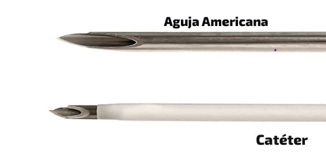
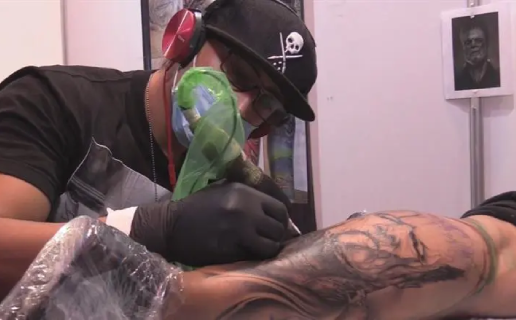
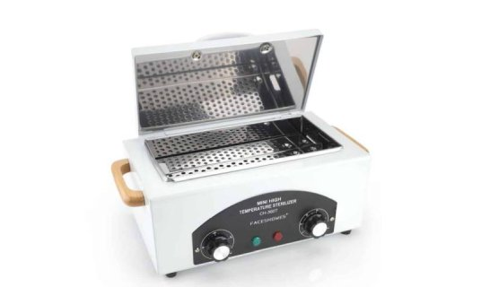

Preguntas Frecuentes
Muchos al pricipio tiene muchas dudas e inquietudes de como es el proceso de un piercing los cuidados, que
materiales utilizamos etc.
Nosotros se las vamos a responder a algunas de esas dudas tan frecuentes.
Nosotros usamos exclusivamente AGUJA AMERICANA, ya que es un corte mucho mas limpio, no lastima de mas la piel (ejemplo como el cáteter y ni hablas de la pistola) es mas filosa y comoda de usar para el piercer.
Usamos agujas descarables. Todo se abre delante del cliente, todos los cables,maquina,almohadones,mesa y utensillos estan forrados en papel film asi evitar posibles infecciones o contaminación.
Sí, en caso de los tatuajes como ya dijimos son vuevos y decartables, esa aguja solo se usa y usó con esapersona. Y en caso de los Piercings, las agujas y pinzas las esterilizamos una vez terminado el piercing. Acto seguido los sellamos en bolsas también estériles.
